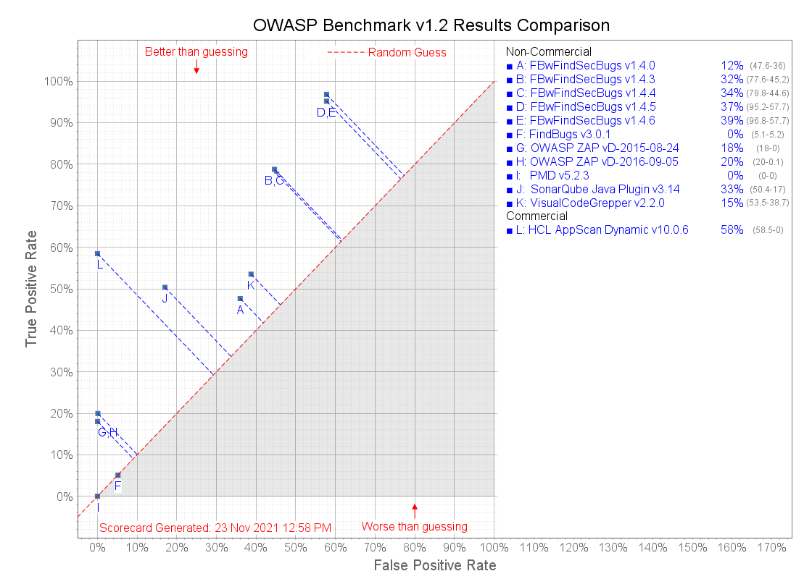

OWASP Benchmark is a test suite designed to evaluate the speed, coverage, and accuracy of automated vulnerability detection tools. Without the ability to measure these tools, it is difficult to understand their strengths and weaknesses, and compare them to each other. OWASP Benchmark contains thousands of test cases that are fully runnable and exploitable.
The chart below presents the overall results for this set of tools scored against version 1.2 of OWASP Benchmark. The score for each tool is the overall true positive rate (TPR) across all the test categories, minus the overall false positive rate (FPR). To see the detailed results for any particular tool, select the tool from the menus above. For an explanation of all the metrics calculated for each tool, see the Guide page.
For more information, please visit the OWASP Benchmark Project Site.
Legend: Each line of the scorecard in the upper right has the name/version of a specific tool, followed by the overall % score for that tool. After each % is the overall TPR - FPR for that tool used to calculate this score. See the table below for more precise scoring details.
| Tool | Type | TPR* | FPR* | Score* |
|---|---|---|---|---|
| FBwFindSecBugs v1.4.0 | SAST | 47.64% | 35.99% | 11.65% |
| FBwFindSecBugs v1.4.3 | SAST | 77.60% | 45.21% | 32.39% |
| FBwFindSecBugs v1.4.4 | SAST | 78.77% | 44.64% | 34.13% |
| FBwFindSecBugs v1.4.5 | SAST | 95.20% | 57.74% | 37.46% |
| FBwFindSecBugs v1.4.6 | SAST | 96.84% | 57.74% | 39.10% |
| FindBugs v3.0.1 | SAST | 5.12% | 5.19% | -0.07% |
| HCL AppScan Dynamic v10.0.6 | DAST | 58.48% | 0.00% | 58.48% |
| OWASP ZAP vD-2015-08-24 | DAST | 18.03% | 0.04% | 17.99% |
| OWASP ZAP vD-2016-09-05 | DAST | 19.95% | 0.12% | 19.84% |
| PMD v5.2.3 | SAST | 0.00% | 0.00% | 0.00% |
| SonarQube Java Plugin v3.14 | SAST | 50.36% | 17.02% | 33.34% |
| VisualCodeGrepper v2.2.0 | SAST | 53.51% | 38.73% | 14.78% |
*-Please refer to each tool's scorecard for the data used to calculate these values.
| True Positive (TP) | Tests with real vulnerabilities that were correctly reported as vulnerable by the tool. |
|---|---|
| False Negative (FN) | Tests with real vulnerabilities that were not correctly reported as vulnerable by the tool. |
| True Negative (TN) | Tests with fake vulnerabilities that were correctly not reported as vulnerable by the tool. |
| False Positive (FP) | Tests with fake vulnerabilities that were incorrectly reported as vulnerable by the tool. |
| True Positive Rate (TPR) = TP / ( TP + FN ) | The rate at which the tool correctly reports real vulnerabilities. Also referred to as Recall, as defined at Wikipedia. |
| False Positive Rate (FPR) = FP / ( FP + TN ) | The rate at which the tool incorrectly reports fake vulnerabilities as real. |
| Score = TPR - FPR | How good the tool is at finding true positives and avoiding false positives. |